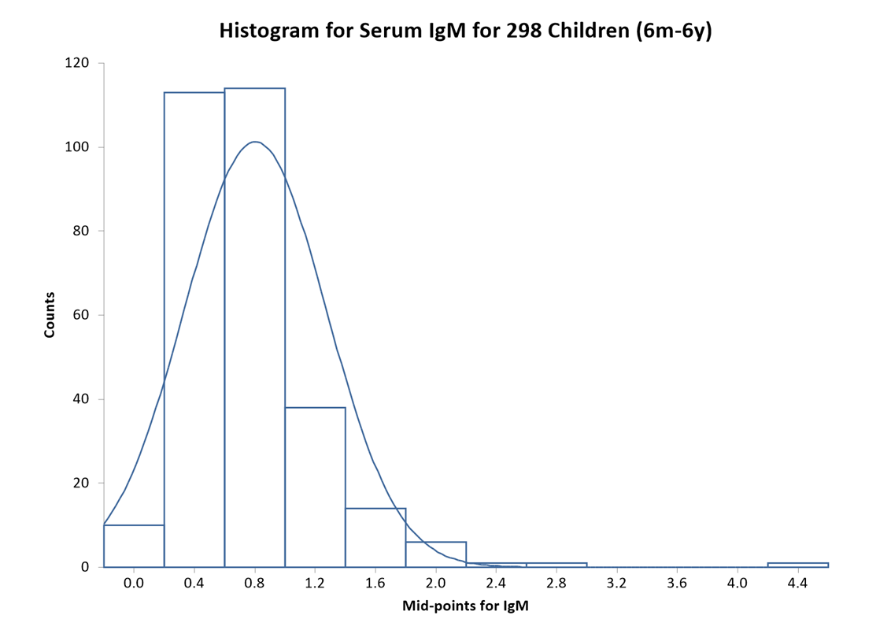
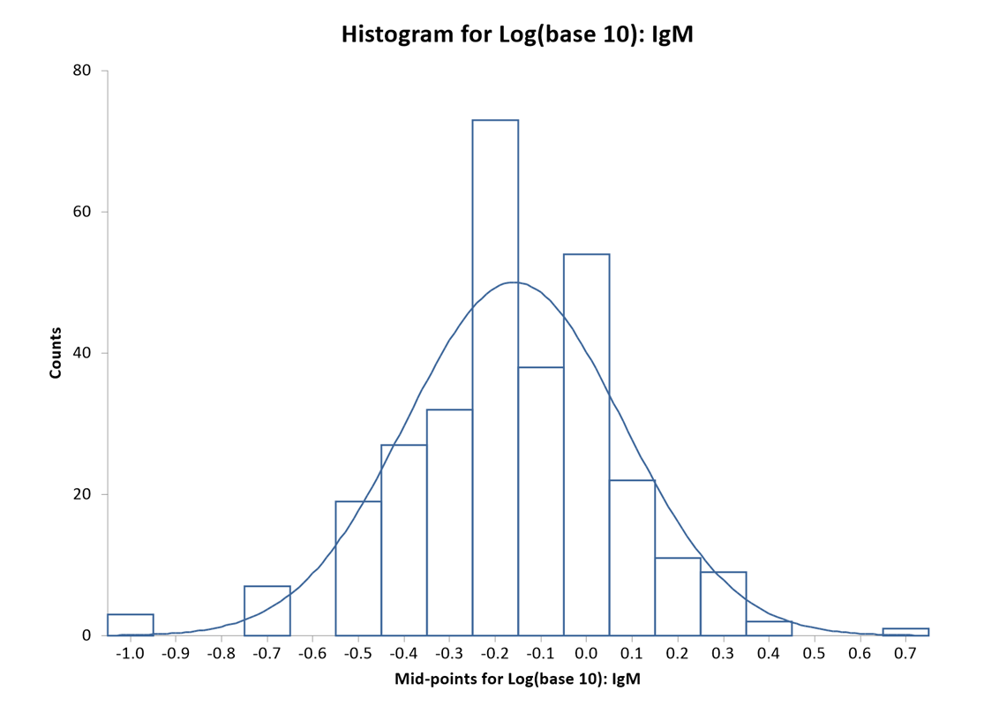

Histogram
Menu location: Graphics_Histogram.
The frequency distribution histogram is plotted vertically as a chart with bars that represent numbers of observations within certain ranges (bins) of values.
The variable that you select is divided into m ranges (bins, bars). The variable is then sorted and the first k values less than or equal to the upper limit of the first bin are counted as the frequency of the first bin. This counting is then repeated for each bin, and bars are plotted to represent the counts. The numbers displayed on the x axis are the middle values (mid-points) for the value range of each bin; when there are more than twenty bins, or the labels would crowd the axis, only every second, third or further mid-point is labelled.
StatsDirect chooses the number of bins by Doane's rule unless you select another rule in the chart options; the StatsDirect Mid-point rule selects a "neat" number of bins and "neat" mid-point values for your data. You may over-ride this selection and set your own bin specifications when prompted.
You may opt to superimpose a normal/Gaussian curve on a histogram plot.
The text-based version of this plot prints the number of data in each bin.


Example
Test workbook (Other worksheet: IgM, Log(base 10): IgM).
The charts above are of the serum IgM concentrations, in g/l, of 298 children aged 6 months to 6 years (Altman, 1991), which the reference range example also uses: first as measured, then as logarithms to base 10. The Graphics worksheet holds the same data as a frequency table (IgM Values, Frequency).
To draw the histogram in StatsDirect open the test workbook using the file open function of the file menu. Then select Histogram from the Graphics menu and select the column marked "IgM" when prompted for data. The number of bins is chosen by Doane's rule unless you pick another rule in the chart options (Sturges, Freedman-Diaconis, Stata, Shimazaki-Shinomoto, or the StatsDirect Mid-point rule of the "neat" mid-points that the charts above show) or enter your own number of bins there; the same options overlay the normal curve. The bins are equal intervals from the smallest value to the largest, and the x axis is labelled at their mid-points.
For this example, the chart prints no figures; its bars show:
Distribution of IgM
Bins = 13 (Doane's rule), width = 0.338462
Mid-points: 0.27 0.61 0.95 1.28 1.62 1.96 2.30 2.64 2.98 3.32 3.65 3.99 4.33
Counts: 56 105 92 22 11 8 1 2 0 0 0 0 1
Distribution of Log(base 10): IgM
Bins = 11 (Doane's rule), width = 0.150292
Mid-points: -0.925 -0.775 -0.624 -0.474 -0.324 -0.173 -0.023 0.127 0.277 0.428 0.578
Counts: 3 0 7 19 59 73 92 28 14 2 1
The IgM concentrations are skewed to the right, with a tail that reaches 4.5 g/l, so most of the bins above 2 g/l are empty or nearly so. Their logarithms are close to symmetrical, and the normal curve overlaid on the second histogram (the normal distribution with the mean and standard deviation of the logarithms, scaled to the counts) fits them well, which is why the reference range example works with the logarithms.
 R code
R code
This R code reproduces the illustration above. It needs no packages and was checked with R 4.6.1. Paste it into R, or save it as a script and run it.
# Histogram: the StatsDirect help illustration (serum IgM in g/l of 298 children aged
# 6 months to 6 years, Altman 1991; the test workbook's Other worksheet columns IgM
# and Log(base 10): IgM) in R
# The data are the IgM column of the test workbook.
igm <- c(0.1, 0.1, 0.1, 0.2, 0.2, 0.2, 0.2, 0.2, 0.2, 0.2, 0.3, 0.3, 0.3, 0.3,
0.3, 0.3, 0.3, 0.3, 0.3, 0.3, 0.3, 0.3, 0.3, 0.3, 0.3, 0.3, 0.3, 0.3, 0.3,
0.4, 0.4, 0.4, 0.4, 0.4, 0.4, 0.4, 0.4, 0.4, 0.4, 0.4, 0.4, 0.4, 0.4, 0.4,
0.4, 0.4, 0.4, 0.4, 0.4, 0.4, 0.4, 0.4, 0.4, 0.4, 0.4, 0.4, 0.5, 0.5, 0.5,
0.5, 0.5, 0.5, 0.5, 0.5, 0.5, 0.5, 0.5, 0.5, 0.5, 0.5, 0.5, 0.5, 0.5, 0.5,
0.5, 0.5, 0.5, 0.5, 0.5, 0.5, 0.5, 0.5, 0.5, 0.5, 0.5, 0.5, 0.5, 0.5, 0.6,
0.6, 0.6, 0.6, 0.6, 0.6, 0.6, 0.6, 0.6, 0.6, 0.6, 0.6, 0.6, 0.6, 0.6, 0.6,
0.6, 0.6, 0.6, 0.6, 0.6, 0.6, 0.6, 0.6, 0.6, 0.6, 0.6, 0.6, 0.6, 0.6, 0.6,
0.6, 0.6, 0.6, 0.6, 0.7, 0.7, 0.7, 0.7, 0.7, 0.7, 0.7, 0.7, 0.7, 0.7, 0.7,
0.7, 0.7, 0.7, 0.7, 0.7, 0.7, 0.7, 0.7, 0.7, 0.7, 0.7, 0.7, 0.7, 0.7, 0.7,
0.7, 0.7, 0.7, 0.7, 0.7, 0.7, 0.7, 0.7, 0.7, 0.7, 0.7, 0.7, 0.8, 0.8, 0.8,
0.8, 0.8, 0.8, 0.8, 0.8, 0.8, 0.8, 0.8, 0.8, 0.8, 0.8, 0.8, 0.8, 0.8, 0.8,
0.8, 0.8, 0.8, 0.8, 0.8, 0.8, 0.8, 0.8, 0.8, 0.8, 0.8, 0.8, 0.8, 0.8, 0.8,
0.8, 0.8, 0.8, 0.8, 0.8, 0.9, 0.9, 0.9, 0.9, 0.9, 0.9, 0.9, 0.9, 0.9, 0.9,
0.9, 0.9, 0.9, 0.9, 0.9, 0.9, 0.9, 0.9, 0.9, 0.9, 0.9, 0.9, 1, 1, 1, 1, 1, 1,
1, 1, 1, 1, 1, 1, 1, 1, 1, 1, 1.1, 1.1, 1.1, 1.1, 1.1, 1.1, 1.1, 1.1, 1.1,
1.1, 1.1, 1.1, 1.1, 1.1, 1.1, 1.1, 1.2, 1.2, 1.2, 1.2, 1.2, 1.2, 1.3, 1.3,
1.3, 1.3, 1.3, 1.3, 1.3, 1.4, 1.4, 1.4, 1.4, 1.4, 1.4, 1.4, 1.4, 1.4, 1.5,
1.5, 1.5, 1.5, 1.5, 1.5, 1.6, 1.6, 1.7, 1.7, 1.7, 1.8, 1.8, 1.8, 2, 2, 2, 2.1,
2.1, 2.2, 2.5, 2.7, 4.5)
# StatsDirect's default number of bins is Doane's rule: 1 + log2(n) + log2(1 + |g1| /
# sigma), rounded, where g1 is the skewness (the third central moment divided by the
# second to the power 1.5) and sigma = sqrt(6 (n - 2) / ((n + 1) (n + 3))) its standard
# error under normality. The bins are equal intervals from the smallest value to the
# largest; a value on a bin's upper edge belongs to that bin and the smallest value to
# the first bin, as hist() counts with right = TRUE and include.lowest = TRUE.
doane <- function(x) {
# StatsDirect takes the skewness as 0 when it cannot compute it (n <= 3 or all
# values equal); without this R gives a different count for n = 3 and NaN below
if (length(x) <= 3 || var(x) == 0) return(round(1 + log2(length(x))))
m2 <- mean((x - mean(x))^2)
m3 <- mean((x - mean(x))^3)
g1 <- m3 / m2^1.5
sigma <- sqrt(6 * (length(x) - 2) / ((length(x) + 1) * (length(x) + 3)))
round(1 + log2(length(x)) + log2(1 + abs(g1) / sigma))
}
six <- function(x) formatC(x, digits = 6, format = "f", drop0trailing = TRUE)
# The chart labels the x axis at the bin mid-points: exactly when they are short (up
# to 4 decimals), otherwise with the fewest decimals (up to 6) that put every label
# within a fortieth of a bin of its mid-point (-1 here means neither, when the chart
# falls back to three significant figures).
decimals_within <- function(mids, error, most) {
for (d in 0:most) if (max(abs(round(mids, d) - mids)) <= error) return(d)
-1
}
label_decimals <- function(mids, width) {
d <- decimals_within(mids, width * 1e-9, 4)
if (d < 0) d <- decimals_within(mids, width / 40, 6)
d
}
mid_labels <- function(mids, width) {
d <- label_decimals(mids, width)
if (d < 0) return(formatC(mids, digits = 3, format = "g"))
formatC(mids, digits = d, format = "f")
}
# One histogram in StatsDirect's layout: bars, the mid-point labels and, when asked
# for, the normal curve of the data's mean and standard deviation scaled to the counts
# (n times the bin width times the normal density), as the chart option draws it.
sd_histogram <- function(x, name, normal_curve = FALSE) {
k <- doane(x)
breaks <- seq(min(x), max(x), length.out = k + 1)
h <- hist(x, breaks = breaks, right = TRUE, include.lowest = TRUE, plot = FALSE)
width <- breaks[2] - breaks[1]
labels <- mid_labels(h$mids, width)
cat("Distribution of", name, "\n")
cat("Bins =", k, "(Doane's rule), width =", six(width), "\n")
cat("Mid-points:", labels, "\n")
cat("Counts:", h$counts, "\n\n")
plot(h, main = paste("Distribution of", name), xlab = paste("Mid-points for", name),
ylab = "Counts", xaxt = "n", col = NA, border = "steelblue4")
axis(1, at = h$mids, labels = labels)
if (normal_curve) {
scale <- length(x) * width
m <- mean(x)
s <- sd(x)
curve(scale * dnorm(x, m, s), add = TRUE, col = "steelblue4")
}
invisible(h)
}
# The IgM concentrations, then their logarithms to base 10 with the normal curve
sd_histogram(igm, "IgM")
sd_histogram(log10(igm), "Log(base 10): IgM", normal_curve = TRUE)